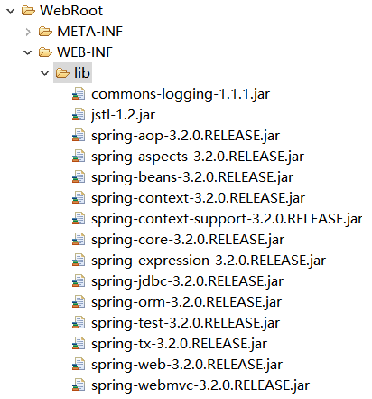

1. SpringMVC架构
1.1 Spring web mvc介绍
Spring web mvc和Struts2都属于表现层的框架,它是Spring框架的一部分,我们可以从Spring的整体结构中看得出来：
1.2 Web MVC
1.2.1 架构图
mvc设计模式在b/s系统下应用：
1.2.2 架构流程
- 用户发起request请求至控制器(Controller)，控制接收用户请求的数据，委托给模型进行处理。
- 控制器通过模型(Model)处理数据并得到处理结果，模型通常是指业务逻辑。
- 模型处理结果返回给控制器。
- 控制器将模型数据在视图(View)中展示，web中模型无法将数据直接在视图上显示，需要通过控制器完成。如果在C/S应用中模型是可以将数据在视图中展示的。
- 控制器将视图response响应给用户–通过视图展示给用户要的数据或处理结果。
1.3 Spring web mvc架构
1.3.1 架构图
1.3.2 架构流程
- 用户发送请求至前端控制器(DispatcherServlet)。
- 前端控制器(DispatcherServlet)收到请求调用处理器映射器(HandlerMapping)–处理器映射器根据请求url找到具体的处理器，生成处理器对象及处理器拦截器(如果有则生成)一并返回给DispatcherServlet。
- 前端控制器(DispatcherServlet)通过处理器适配器(HandlerAdapter)调用处理器–执行处理器(Controller，也叫后端控制器)，Controller执行完成返回ModelAndView对象；HandlerAdapter将controller执行结果ModelAndView返回给DispatcherServlet。
- DispatcherServlet将ModelAndView传给ViewReslover视图解析器–ViewReslover解析后返回具体View。
- DispatcherServlet对View进行渲染视图（即将模型数据填充至视图中）。
- DispatcherServlet响应用户
1.3.3 组件说明
DispatcherServlet：前端控制器
用户请求到达前端控制器，它就相当于mvc模式中的c，dispatcherServlet是整个流程控制的中心，由它调用其它组件处理用户的请求，dispatcherServlet的存在降低了组件之间的耦合性。
HandlerMapping：处理器映射器
HandlerMapping负责根据用户请求找到Handler即处理器，springmvc提供了不同的映射器实现不同的映射方式，例如：配置文件方式，实现接口方式，注解方式等。
Handler：处理器
Handler 是继DispatcherServlet前端控制器的后端控制器，在DispatcherServlet的控制下Handler对具体的用户请求进行处理。由于Handler涉及到具体的用户业务请求，所以一般情况需要程序员根据业务需求开发Handler。
HandlAdapter：处理器适配器
通过HandlerAdapter对处理器进行执行，这是适配器模式的应用，通过扩展适配器可以对更多类型的处理器进行执行。
View Resolver：视图解析器
View Resolver负责将处理结果生成View视图，View Resolver首先根据逻辑视图名解析成物理视图名即具体的页面地址，再生成View视图对象，最后对View进行渲染将处理结果通过页面展示给用户。 springmvc框架提供了很多的View视图类型，包括：jstlView、freemarkerView、pdfView等。一般情况下需要通过页面标签或页面模版技术将模型数据通过页面展示给用户，需要由程序员根据业务需求开发具体的页面。
2. 商品订单业务说明
本教程在通过商品订单业务学习使用springmvc进行功能开发。
2.1 业务流程
- 管理员维护商品信息
- 用户挑选商品，购买，创建订单
2.2 数据库环境
获取sql文件请点击百度云 ，密码：dwlw
先导入sql_table.sql（表结构），再导入 sql_data.sql（表数据）
如图：

2.3 商品订单数据模型
3. SpringMVC入门
3.1 需求
实现商品查询列表功能。
3.2 开发环境准备
本教程使用myEclipse+tomcat7开发
3.3 第一步:建立一个Web项目
在myEclipse下创建动态web工程springmvc_first。
步骤：File ==> New ==> Web Project
如图：
注意：选择java EE version选择javaEE5-web2.5,选择javaEE6或javaEE7生成的项目在WEB-INF目录下面找不到web.xml。
3.4 第二步:导入spring3.2.0的jar包
需要spring3.2所有jar（一定包括spring-webmvc-3.2.0.RELEASE.jar）
获取相关jar包请点击百度云，密码：p7qg
把上面所有的jar包放入WebRoot/WEB-INF/lib目录中

3.5 第三步：前端控制器配置
1 | <servlet> |
[说明]
load-on-startup：表示servlet随服务启动；
url-pattern：*.action的请交给DispatcherServlet处理。
contextConfigLocation：指定springmvc配置的加载位置，如果不指定则默认加载WEB-INF/[DispatcherServlet 的Servlet 名字]-servlet.xml。
3.5.1 Servlet拦截方式
- 拦截固定后缀的url，比如设置为 .do、.action， 例如：/user/add.action ,此方法最简单，不会导致静态资源（jpg,js,css）被拦截。
- 拦截所有，设置为/，例如：/user/add /user/add.action,此方法可以实现REST风格的url，很多互联网类型的应用使用这种方式；但是此方法会导致静态文件（jpg,js,css）被拦截后不能正常显示。需要特殊处理。
拦截所有，设置为/*，此设置方法错误，因为请求到Action，当action转到jsp时再次被拦截，提示不能根据jsp路径mapping成功。
3.6 第四步：springmvc配置文件
Springmvc默认加载WEB-INF/[前端控制器的名字]-servlet.xml，也可以在前端控制器定义处指定加载的配置文件，如下：
1
2
3
4<init-param>
<param-name>contextConfigLocation</param-name>
<param-value>classpath:springmvc.xml</param-value>
</init-param>如上代码，通过contextConfigLocation加载classpath下的springmvc.xml配置文件。
需要新建一个Source Folder：config
步骤：鼠标右键springmvc_first ==> New ==> Source Folder 如下图：
在config文件里面创建springmvc.xml3.7 第五步：配置处理器适配器
在springmvc.xml文件配置如下：
1
2
3
4
5
6
7
8
9
10
11
12
13
14
15
16<beans xmlns="http://www.springframework.org/schema/beans"
xmlns:xsi="http://www.w3.org/2001/XMLSchema-instance" xmlns:mvc="http://www.springframework.org/schema/mvc"
xmlns:context="http://www.springframework.org/schema/context"
xmlns:aop="http://www.springframework.org/schema/aop" xmlns:tx="http://www.springframework.org/schema/tx"
xsi:schemaLocation="http://www.springframework.org/schema/beans
http://www.springframework.org/schema/beans/spring-beans-3.2.xsd
http://www.springframework.org/schema/mvc
http://www.springframework.org/schema/mvc/spring-mvc-3.2.xsd
http://www.springframework.org/schema/context
http://www.springframework.org/schema/context/spring-context-3.2.xsd
http://www.springframework.org/schema/aop
http://www.springframework.org/schema/aop/spring-aop-3.2.xsd
http://www.springframework.org/schema/tx
http://www.springframework.org/schema/tx/spring-tx-3.2.xsd ">
<bean class="org.springframework.web.servlet.mvc.SimpleControllerHandlerAdapter"/>
</beans>[说明]
SimpleControllerHandlerAdapter：即简单控制器处理适配器，所有实现了org.springframework.web.servlet.mvc.Controller 接口的Bean作为Springmvc的后端控制器。3.8 第六步：处理器开发
在项目的src目录下新建两个Package：cn.huoyuwang.ssm.controller和cn.huoyuwang.ssm.po
cn：域名
huoyuwang：公司名或项目名
ssm：项目框架
controller：写得所有处理器放在里面
po：实体类（po里面的实体类文件由mybatis逆向工程生成，生成的步骤请参考：）
在controller目录下新建一个class文件：ItemList1
2
3
4
5
6
7
8
9
10
11
12
13
14
15
16
17
18
19
20
21
22
23
24public class ItemList implements Controller {
public ModelAndView handleRequest(HttpServletRequest request,HttpServletResponse response) throws Exception {
//商品列表
List<Items> itemsList = new ArrayList<Items>();
Items items_1 = new Items();
items_1.setName("联想笔记本");
items_1.setPrice(6000f);
items_1.setDetail("ThinkPad T430 联想笔记本电脑！");
Items items_2 = new Items();
items_2.setName("苹果手机");
items_2.setPrice(5000f);
items_2.setDetail("iphone6苹果手机！");
itemsList.add(items_1);
itemsList.add(items_2);
//创建modelAndView准备填充数据、设置视图
ModelAndView modelAndView = new ModelAndView();
//填充数据
modelAndView.addObject("itemsList", itemsList);
//视图
modelAndView.setViewName("order/itemsList");
return modelAndView;
}
}